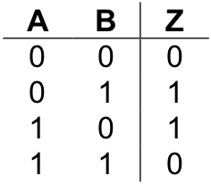

An “exclusive or”, or xor , has two inputs and a single output. Its behavior is defined by the following truth table, where the inputs are labeled “A” and “B” and the output is labeled “Z”.
Like the standard two-input or , the xor produces a “1” (true) when either of its inputs are “1”, and a “0” (false) when both of its inputs are “0”. The difference between or and xor appears in the case when both inputs are “1”. The standard or produces a “1” in this case. The xor generates a “0”. In other words, the “exclusive or” outputs a “1” when either, but not both , of its inputs are “1”.
English does not contain a unique word for expressing the idea of xor – the word “or” does double duty for both its “inclusive” and “exclusive” forms. However, one can usually tell from the context of a sentence which form is intended. For example, if you tell a child “you can have candy or popcorn” the intended meaning is exclusive or – either candy or popcorn, but not both. On the other hand, if a friend says “I’d be happy winning either the Porsche or the Mercedes” the intended meaning is inclusive or – you would certainly not expect your friend to become unhappy if he won both cars.
Now that we understand the behavior of xor in terms of its inputs and outputs, we can turn our attention to the problem of designing a circuit with its behavior.
How are we to begin?
One approach that often gets you moving in the right direction is to examine the truth table to determine the various circumstances under which the circuit must produce a “1”. In the case of xor there are two such cases, one in which input A is “0” and input B is “1”; and another in which input A is “1” and input B is “0”. Once these cases have been identified, we proceed by designing “sub-circuits” that will produce “1” in each of the required cases. The final step is to combine the sub-circuits together using an or gate. This is necessary because the main circuit would be true under any of the cases in which the sub-circuits generate a “1”.
The following sub-circuit will generate a “1” when input A is “0” and input B is “1”.
It works by negating A and feeding that result (together with B) into an and gate. Since both of the inputs to an and must be “1” for it to produce a “1”, the original value of A must be “0”, while the value of B must be “1”. Under all other circumstances this sub-circuit produces “0”. Thus, this circuit successfully captures the meaning of line two of the xor truth table.
A sub-circuit to implement line three of the xor truth table can be constructed similarly.
This circuit generates a “1” whenever input A is “1” and the input B is “0”. Under all other circumstances it produces a “0”.
illustrates a complete xor circuit, which contains the two sub-circuits joined together by an or gate. This is reasonable, since the xor can be true either by way of the first sub-circuit or the second. Note that due to the manner in which the two sub-circuits were constructed, it is impossible for both of them to be true at the same time.
An implementation of xor
A new feature introduced in this circuit diagram is the connection point. Each of the two sub-circuits making up the xor requires access to both inputs. Hence, the wires that represented these inputs had to be “split” in some way. We indicate a branch, or connection, point in a circuit diagram by a dot. Connection points allow a wire to be “split” so that its current state can “flow” to multiple destinations. Here is what a connection point looks like graphically.
The pin on the left is the input to the connection point, or connector. The top, right, and bottom pins are the outputs. Hence, this connector splits the input wire three ways. In the xor circuit diagram a two-way, rather than three-way split was required, so one of the output pins is not drawn.
Connection points should not be confused with wires that just happen to cross one another by chance. In such a case there is no connection between the wires, so their signals do not interfere in any way. (Think of the wires as insulated and just lying across one another.) Wires that cross but are not connect are represented graphically in the following way:
You should convince yourself that the circuit of does indeed implement the truth table for xor . However, you should not come away from this discussion thinking that the circuit of is the only way (or even the most efficient way) to implement the xor behavior. The approach to circuit design of identifying the lines of the truth table that generate a “1”, implementing sub-circuits to generate a “1” only under those circumstances, and then connecting all of the sub-circuits together via an or , works. But, it frequently results in circuits that are more complex than really necessary.
For example, our implementation of xor requires five gates (not counting connectors). An implementation that requires only four gates can be developed from the Boolean expression Z = (A + B) ● (A ● B).
Exercises for
Draw the circuit diagram for the implementation of xor given by the Boolean expression: Z = (A + B) ● (A ● B)
To ensure that the circuit of problem 1 does, in fact, implementation the behavior of xor , give the circuit’s truth table.